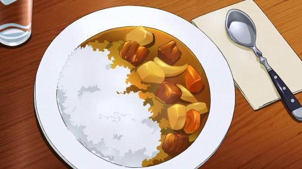

Odin Recipes
Japanese Beef Curry

Ingredients
- 1 tablespoon olive oil
- 1 pound beef stew meat, cut into 1/2-inch cubes
- 2 medium onions, diced
- 5 medium carrots, cut into 1/4-inch rounds
- 6 cups warm water, or more as needed
- 3 large potatoes, peeled and cut into 1/2-inch cubes
- 2 (3.5 ounce) containers curry sauce mix
Directions
-
Heat oil in a large saute pan over medium heat. Add beef and stir-fry until browned and no longer pink in the centers, 5 to 7 minutes. Add onions and carrots; stir-fry until onions start to turn golden, 7 to 8 minutes.
-
Pour in water and add potatoes; add more water if needed to cover. Cover the pan with a lid and cook until potatoes are soft, 10 to 12 minutes. Add curry sauce mix and stir until mixture thickens, 3 to 5 minutes.
Back to homepage